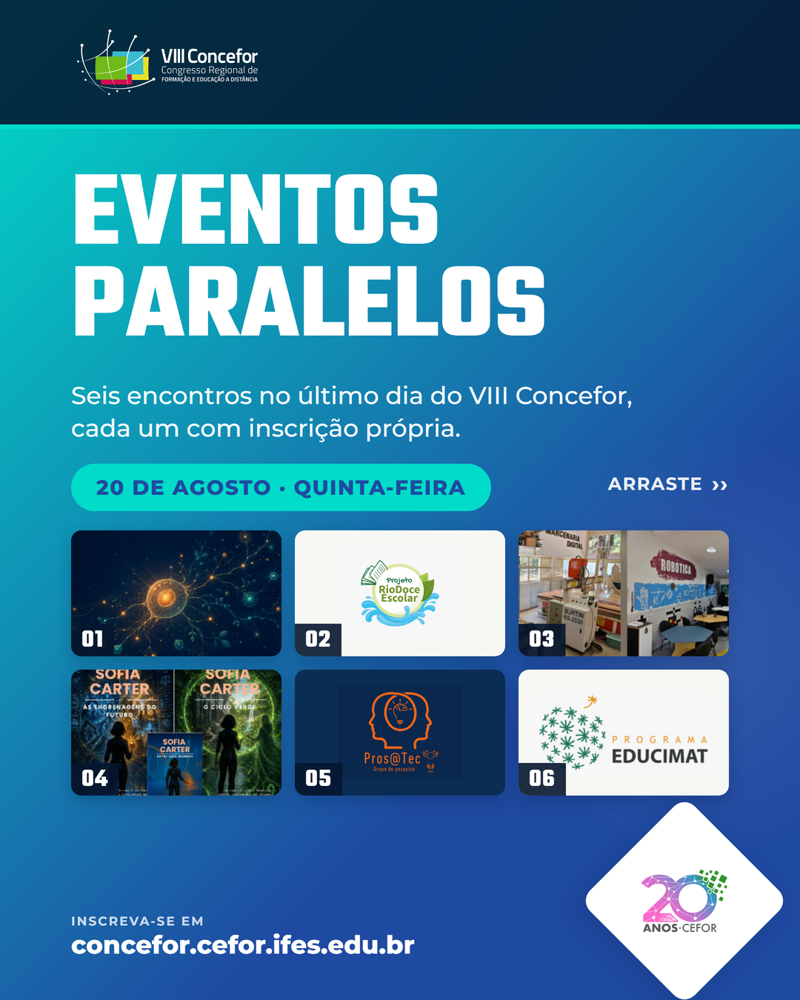

Publique na ordem: capa, depois os seis eventos. A legenda manda para a página que reúne os seis formulários, porque link na legenda do Instagram não é clicável.

Seis encontros acontecem ao mesmo tempo no dia 20 de agosto, o último dia do VIII Concefor. Cada um tem inscrição própria, e dá para escolher pelo que chega mais perto do seu trabalho. 01 IA além do chat. Oficina prática: você monta um espaço de trabalho que guarda o seu contexto e produz com você. Abrimos com o caso de um professor que levava uma semana para transformar aulas antigas e passou a levar meia hora. São 20 vagas. 02 "Ciência delas" no Projeto Rio Doce Escolar. Gestoras, pesquisadoras, professoras e agentes comunitárias da bacia do Rio Doce contam a ciência que fazem na Rede de Educadores Ambientais. 03 Escola de Inovação. Seis anos levando impressão 3D, corte a laser, robótica e realidade virtual para a educação de Vitória, com visita às estações onde tudo acontece. 04 Entre Dois Mundos. Alfabetização em Inteligência Artificial na educação básica, com a coleção de livros-jogo Sofia Carter e abordagem STEAM. 05 Workshop Pros@tec. Pesquisadores apresentam respostas aos desafios da Educação em Computação apontados pela SBC, em rodas de conversa nos dois turnos. 06 Educimat. Os 15 anos do mestrado e doutorado profissional em Educação em Ciências e Matemática do Ifes, comemorados dentro do Concefor. Arraste para ver o horário, o local e a coordenação de cada encontro. Os seis formulários estão reunidos em concefor.cefor.ifes.edu.br/eventos-paralelos Inscrição no Concefor até 15/08, o principal congresso do Espírito Santo sobre Tecnologia e Educação a Distância: concefor.cefor.ifes.edu.br/inscricoes #Concefor #VIIIConcefor #Cefor20Anos #Cefor #Ifes #EaD
Cada texto já traz o formulário do próprio encontro e o link de inscrição no Concefor.